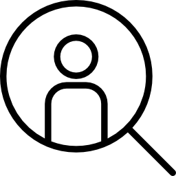
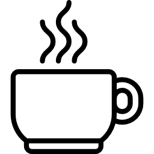

We’ll help you craft the perfect message to ask for a coffee meeting

Search for the person you want to connect with

Get tips to maximize your meeting
We’ll help you craft the perfect message to ask for a coffee meeting
Search for the person you want to connect with
Get tips to maximize your meeting
Asking someone for coffee can seem very scary. We want to help you craft the perfect introduction message based on LinkedIn profiles to get you that coffee meeting that will help your career.
Coffee meetings can be a great way to ask about a job, connect with someone, share an idea, or offer a service. Through coffee meetings, you can find your next mentor.